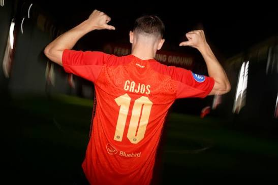

Mari kita bedah data All-Time (Sepanjang Masa) untuk Transfer Termahal dalam Sejarah Liga Indonesia.
Meskipun mayoritas klub mendatangkan pemain lewat jalur bebas agen, rekor kepindahan resmi yang melibatkan kompensasi tebusan antarklub dan investasi nilai kontrak di bawah ini menjadi catatan sejarah paling fenomenal di tanah air.
10. Gilbert Álvarez
💰 Rp8,69 Miliar (Palmaflor ➡️ Arema FC)
Pada November 2023, Arema FC mengejutkan publik dengan menebus sisa kontrak striker Timnas Bolivia, Gilbert Álvarez, dari Palmaflor dengan taksiran biaya transfer sekitar Rp8,69 Miliar. Ia didatangkan pada bursa transfer paruh musim untuk menggantikan posisi Gustavo Almeida yang hengkang ke Persija. Perjalanan kariernya di Indonesia tergolong singkat dan penuh tantangan berat karena Arema sedang berjuang di papan bawah. Meski menunjukkan kerja keras, Álvarez kesulitan mereplikasi ketajamannya di Amerika Selatan dan akhirnya sepakat mengakhiri kerja sama lebih cepat karena alasan keluarga.
📌 Kesuksesan Klub: Berhasil membantu Arema FC keluar secara dramatis dari zona degradasi di pekan-pekan akhir liga.
⭐ Kesuksesan Individu: Mencetak 2 gol dalam 11 penampilan sebelum memutus kontraknya.
9. Hanno Behrens
💰 Rp3,48 Miliar / €200 Ribu (Hansa Rostock ➡️ Persija Jakarta)
Persija Jakarta merogoh kocek cukup dalam pada Juli 2022 demi menebus Hanno Behrens dari klub Jerman, Hansa Rostock, seharga Rp3,48 Miliar (€200 Ribu) atas permintaan pelatih Thomas Doll. Kedatangan gelandang Jerman ini menandai proyek ambisius berbau Eropa di ibu kota. Behrens langsung menjadi idola baru Jakmania berkat visi bermain kelas tinggi dan fleksibilitas taktiknya. Momen ikonik utamanya adalah mencetak gol-gol krusial dari lini kedua di awal musim yang mengangkat posisi Persija ke papan atas. Sayangnya, masalah kesehatan pencernaan dan proses aklimatisasi cuaca yang buruk mengganggu konsistensinya di paruh kedua musim.
📌 Kesuksesan Klub: Membantu Persija Jakarta finis sebagai Runner-up Liga 1 musim 2022/2023.
⭐ Kesuksesan Individu: Mengemas 5 gol dalam 18 pertandingan di musim perdananya sebelum memilih kembali ke Jerman.
8. Maciej Gajos

💰 Rp4,35 Miliar / €250 Ribu (Lechia Gdańsk ➡️ Persija Jakarta)
Persija Jakarta kembali melakukan tebusan transfer ekspatriat pada Juli 2023 dengan mengamankan tanda tangan gelandang asal Polandia, Maciej Gajos, dari Lechia Gdańsk senilai Rp4,35 Miliar (€250 Ribu). Proses transfer berjalan alot karena Gajos masih menjadi pilar utama di klub lamanya. Di bawah asuhan Thomas Doll, Gajos diplot sebagai dirigen lini tengah untuk mengatur ritme permainan tim Macan Kemayoran. Momen ikonik terbaiknya adalah eksekusi tendangan bebas melengkung yang mematikan serta assist-assist akurat dari bola mati yang kerap memecah kebuntuan tim dalam laga-laga besar.
📌 Kesuksesan Klub: Menjaga stabilitas lini tengah Persija dan membawa tim melaju hingga babak Championship Series.
⭐ Kesuksesan Individu: Menjadi salah satu pemain asing dengan menit bermain paling konsisten dan pencetak assist bola mati utama klub.
7. Majed Osman
💰 Rp4,35 Miliar / €250 Ribu (Al-Ansar ➡️ Dewa United)
Klub promosi kaya raya Dewa United menunjukkan kekuatan finansialnya pada Juli 2022 dengan menebus gelandang serang Timnas Lebanon, Majed Osman, dari Al-Ansar FC senilai Rp4,35 Miliar (€250 Ribu). Kontribusi Osman di lini tengah Dewa United berjalan sangat instan. Ia berkembang menjadi otak serangan tim, penjelajah ruang, dan motor serangan utama. Momen ikonik puncaknya adalah gol solorun indahnya saat mengobrak-abrik pertahanan tim-tim besar serta assist-assist visioner yang memanjakan lini depan Dewa United untuk bersaing di kasta tertinggi sepak bola nasional.
📌 Kesuksesan Klub: Mengangkat performa Dewa United dari tim promosi semenjana hingga menembus papan atas Liga 1.
⭐ Kesuksesan Individu: Konsisten mencatatkan kontribusi dua digit gol dan assist selama masa baktinya bersama Tangsel Warriors.
6. Jajá / Hugo Gomes
💰 Rp5,22 Miliar / €300 Ribu (Madura United ➡️ Dewa United)
Bursa transfer Liga 1 diguncang oleh Dewa United pada Juli 2024 ketika mereka menebus sisa komitmen dan mengamankan kontrak Hugo Gomes (Jajá) lewat biaya kompensasi senilai Rp5,22 Miliar (€300 Ribu). Gelandang elegan asal Brasil eks kapten Madura United ini merupakan salah satu playmaker terbaik di tanah air. Di Dewa United, ia langsung menyatu dalam skema taktik lini tengah mewah bersama Alexis Messidoro. Momen ikonik utamanya adalah gol-gol dari tendangan bebas melengkung kaki kiri yang akurat serta dominasinya dalam mendikte tempo permainan di lini tengah.
📌 Kesuksesan Klub: Membuat lini tengah Dewa United ditakuti dan menjadi salah satu kandidat kuat juara liga.
⭐ Kesuksesan Individu: Menjaga reputasinya sebagai salah satu gelandang asing dengan operan kunci (key passes) terbanyak di Liga Indonesia.
5. Alexis Messidoro
💰 Rp6,10 Miliar / €350 Ribu (Persis Solo ➡️ Dewa United)
Perpindahan yang memicu kontroversi besar terjadi pada Juli 2024 saat Dewa United menebus klausul pelepasan Alexis Messidoro dari Persis Solo senilai Rp6,10 Miliar (€350 Ribu). Messidoro adalah roh permainan Persis Solo sebelum ditebus oleh Dewa United. Gelandang asal Argentina ini dikenal memiliki kreativitas tak terbatas dan daya jelajah yang sangat tinggi. Momen ikonik pertamanya bersama klub baru adalah assist magis tanpa melihat (no-look pass) yang langsung membuahkan gol, membuktikan bahwa nilai transfer mahalnya sangat sepadan dengan kualitas di lapangan.
📌 Kesuksesan Klub: Membawa Dewa United bertransformasi menjadi tim Los Galacticos Indonesia yang sangat atraktif.
⭐ Kesuksesan Individu: Konsisten bersaing di daftar papan atas pencetak assist terbanyak dalam satu musim liga.
4. Maxwell
💰 Rp5,46 Miliar / €314 Ribu (GD Chaves ➡️ Persija Jakarta)
Persija Jakarta kembali memecahkan rekor transfer internal klub pada bursa transfer musim panas Juli 2025 dengan menebus winger lincah asal Brasil, Maxwell, dari klub Portugal GD Chaves senilai Rp5,46 Miliar (€314 Ribu). Pemain sayap yang memiliki kecepatan eksplosif ini didatangkan untuk menghidupkan kembali kreativitas penyerangan sayap Macan Kemayoran yang sempat lesu. Momen ikonik puncaknya adalah gol penentu kemenangan dalam laga klasik melawan Persib Bandung lewat skema serangan balik cepat yang langsung membuatnya dicintai oleh publik Jakarta.
📌 Kesuksesan Klub: Membawa Persija Jakarta kembali bersaing di jalur perebutan gelar juara Liga 1.
⭐ Kesuksesan Individu: Menjadi pemain sayap dengan rekor dribel sukses tertinggi di kompetisi.
3. Sergio van Dijk
💰 Rp6,96 Miliar / €400 Ribu (Adelaide United ➡️ Persib Bandung)
Pada Januari 2013 (diperhitungkan sebagai salah satu kompensasi kepindahan all-time terbaik), Persib Bandung memecahkan rekor nasional kala itu dengan menebus striker naturalisasi Sergio van Dijk dari klub Australia, Adelaide United, senilai Rp6,96 Miliar (€400 Ribu). Kedatangan bomber plontos ini disambut histeria luar biasa oleh bobotoh. Van Dijk langsung tampil meledak sejak laga debutnya dengan naluri gol yang sangat mematikan. Momen ikonik yang paling membekas adalah rentetan gol sundulan bertenaga dan tendangan jarak jauh roketnya yang membawa Persib merangkak naik memecah dominasi papan atas liga saat itu.
📌 Kesuksesan Klub: Membawa Persib Bandung finis di peringkat 4 besar dan membangun pondasi skuad juara untuk musim-musim berikutnya.
⭐ Kesuksesan Individu: Mencetak 21 gol dalam satu musim, menyamai rekor gol terbanyak dalam sejarah semusim klub milik Sutiono Lamso.
2. Michael Essien
💰 Contract Value Rp11 M - Rp15 M (Free Transfer ➡️ Persib Bandung)
Persib Bandung mengguncang panggung sepak bola dunia pada Maret 2017 dengan mendatangkan mantan bintang Chelsea dan Real Madrid, Michael Essien. Meskipun status kepindahannya bebas transfer (free agent), Essien memecahkan rekor sejarah sepak bola Indonesia sebagai kontrak investasi termahal sepanjang masa dengan nilai kontrak/gaji mencapai Rp11 Miliar - Rp15 Miliar per musim. Kehadirannya melahirkan fenomena Marquee Player di tanah air. Momen ikonik yang tak terlupakan adalah gol sundulannya ke gawang PS TNI yang digemakan media internasional, serta aksi jenakanya saat mengejar Yanto Basna memakai sepeda saat latihan.
📌 Kesuksesan Klub: Menaikkan nilai komersial, penjualan merchandise, serta sorotan media internasional terhadap klub Persib Bandung ke level tertinggi dalam sejarah.
⭐ Kesuksesan Individu: Tampil dalam 29 laga dan mengemas 5 gol, menjadi jangkar lini tengah yang memberikan pelajaran berharga bagi pemain-pemain lokal.
1. Matheus Pato
💰 Rp17,38 Miliar / €1,00 Juta (Borneo FC ➡️ Shandong Taishan)
Rekor finansial tertinggi dan paling tidak tertandingi dalam sejarah Liga Indonesia terjadi pada Juli 2023 saat klub raksasa China, Shandong Taishan, menebus klausul pelepasan (release clause) striker Borneo FC, Matheus Pato, senilai Rp17,38 Miliar (€1,00 Juta). Ini adalah rekor kepindahan termahal dalam sejarah karena melibatkan dana tunai segar masuk ke klub Indonesia dalam jumlah masif. Pato adalah mesin gol menakutkan yang baru saja membawa Borneo FC disegani. Momen ikonik perpisahannya yang emosional di Stadion Segiri menyisakan kebanggaan bagi Pesut Etam karena berhasil mengekspor striker tersubur liga ke kompetisi kasta tertinggi Asia dengan nilai luar biasa.
📌 Kesuksesan Klub: Memberikan keuntungan finansial (dana segar) terbesar sepanjang sejarah bagi klub sepak bola Indonesia untuk berinvestasi jangka panjang pada fasilitas dan akademi.
⭐ Kesuksesan Individu: Meraih gelar Top Skor Liga 1 2022/2023 dengan 25 gol, sebelum memecahkan rekor komoditas penjualan termahal sejarah liga.